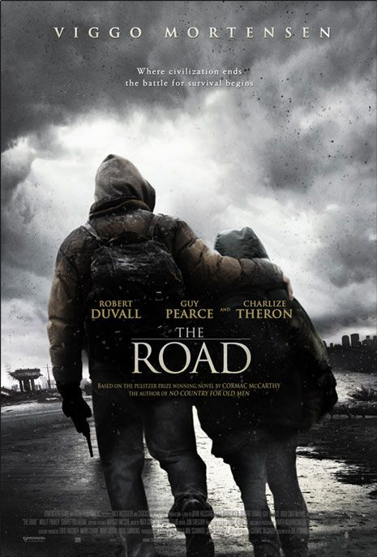

En el mundo cinematográfico existen diversos géneros, pero hay uno que surge desde hace cientos de años en Grecia conocido como el Drama.
Claramente en aquella época no existía el cine, sin embargo, a través de ceremonias que más adelante se convertirían en dramaturgias y después de muchos años esto pasaría a ser el drama teatral de Francia. Gracias a su popularidad en el teatro, cuando surge el cine fue llevado a la pantalla grande, todos esos años de recorrido fueron las bases de lo que hoy en día conocemos como cine dramático.
Y aunque los géneros hoy en día se mezclan en las películas, las que son catalogadas como Drama o en los subgéneros como comedia dramática, melodrama, dramas románticos, dramas policíacos, drama histórico entre otros, tienen características muy específicas. Pues por lo general, la temática de estas películas se basa en diversos conflictos emocionales e incluso en la superación personal, ya que en definitiva lo que nos vuelve humanos son nuestras emociones.
Es por esta razón las películas de drama son tan reconocidas, incluso las que utilizan el drama únicamente como recurso narrativo dentro de su historia, atraen mucho más a los espectadores. Dentro de este género tenemos películas conocidas como: Titanic, La vida es bella, siete almas, en busca de la felicidad, lo imposible; que están divididas en diferentes subgéneros pero que todas tiene algo en común que es indispensable El DRAMA.
Películas para llorar
|  |